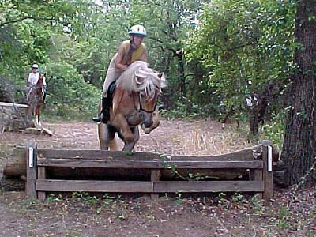
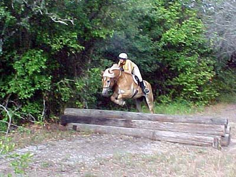
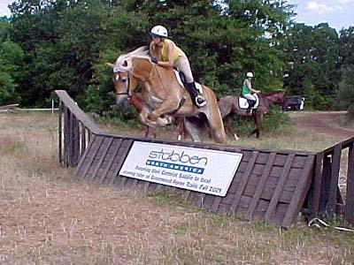
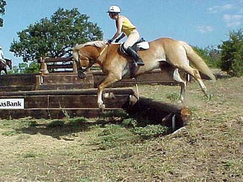
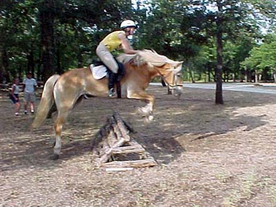
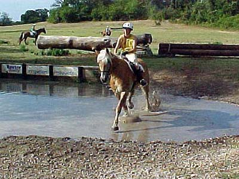
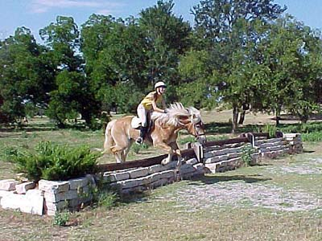

Schooling Cross Country
at Greenwood Adamir was just like any other horse at
this schooling day.
No snorting and shying at the galloping
horses (one horse actually
snorted and shied at us galloping, ha!)
He was nicer to the fences. Not rushing
or pulling, just listening
and moving off my leg.
I was able to relax and look forward to
each jump.
He still needs to trust that jumping from
the canter will work. If I
wasn't strong about pushing him to the
jump in the canter, he'd
back off and I'd feel some hesitation.
I'm sure it'll come. It didn't take much
for him to figure out trotting them.
Click
here for pictures of the other people in our group jumping.

Adamir was more relaxed than the last
time we schooled cross country. He didn't over jump so much and nothing
really startled him today.

We cantered more of the jumps and
he started to understand that jumping was more comfortable from a canter
stride.

See, nice and tucked, but not using
more effort than he needed to.

We did a combination of a down bank
and an up bank two strides later. Adamir really strutted after that.

Our only run-out. It was a narrow
jump off of a sharp turn. I expected him to try to run-out right, so I
kept up my guard, and probably caused the run-out to the left... We just
came right back at it; I kept him straight, and over we went.

I'm not too concerned about water
now. I approached it from far back, with no lead, and he hesitated, but
went in, trotted out, and went over the telephone poles. The second time
we did it at a canter, which was really fun.

By the last jump he was getting a
bit lazy. They're so small I wasn't worried (he never hit anything). I
think it's good that he's learning to only jump as much as he needs to.
It'll help conserve energy when we're galloping the course on event day.